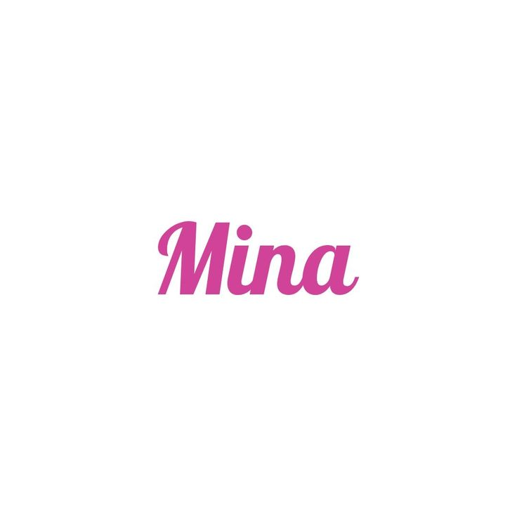

Myoui Mina
Biodata
- Nama Lengkap: Myoui Mina Sharon
- Tanggal Lahir: 24 Maret 1997
- Posisi: Main Dancer, Vocalist
- Golongan Darah: A
- Tinggi: 163 cm
- Hobi: Menari balet, menonton film, bermain game
Biografi & Perjalanan Karier
Myoui Mina lahir pada 24 Maret 1997 di San Antonio, Texas, Amerika Serikat, namun dibesarkan di Kobe, Jepang. Mina memiliki kewarganegaraan ganda Jepang-Amerika dan merupakan anak bungsu dari dua bersaudara. Ia dikenal dengan keanggunan dan kelembutannya, yang tercermin dari latar belakangnya sebagai penari balet sejak usia dini. Mina telah menekuni balet selama lebih dari 10 tahun dan tampil dalam berbagai pertunjukan.
Sebelum bergabung dengan industri K-pop, Mina menjalani kehidupan yang relatif normal sebagai siswi di Jepang. Namun, kecintaannya pada musik dan ketertarikannya terhadap dunia hiburan Korea membawanya mengikuti audisi terbuka JYP Entertainment di Jepang. Ia lolos audisi pada tahun 2014 dan mulai menjalani pelatihan di Korea Selatan hanya dalam waktu singkat sebelum akhirnya debut bersama TWICE.
Pada tahun 2015, Mina mengikuti program survival SIXTEEN yang diselenggarakan oleh JYP untuk menentukan anggota TWICE. Meskipun saat itu masih baru di Korea dan mengalami hambatan bahasa, Mina tampil memukau dengan gerakan baletnya yang anggun dan aura panggung yang memikat. Ia akhirnya terpilih sebagai salah satu anggota TWICE dan menjadi bagian dari trio Jepang di grup bersama Sana dan Momo.
Sejak debut TWICE pada Oktober 2015, Mina menunjukkan perannya sebagai penari utama dengan gaya yang elegan dan halus, memberikan keseimbangan visual dan emosional di atas panggung. Ia dikenal dengan ekspresi wajahnya yang menenangkan dan gerakan tari yang anggun, menjadikannya salah satu performer paling khas di TWICE. Beberapa lagu seperti “Feel Special” dan “Fancy” menonjolkan keanggunan Mina di panggung.
Pada tahun 2019, Mina menghadapi tantangan kesehatan mental berupa gangguan kecemasan. Ia sempat hiatus dari kegiatan TWICE untuk fokus pada pemulihan. Keputusan tersebut didukung oleh fans dan member lainnya, menunjukkan betapa pentingnya kesehatan mental di industri K-pop yang sangat menuntut. Mina kembali dengan semangat baru dan performa yang lebih kuat, menunjukkan keteguhan dan keberaniannya.
Selain kegiatan grup, Mina juga aktif dalam berbagai proyek iklan, pemotretan majalah, dan promosi individu. Ia menjadi salah satu wajah favorit merek-merek ternama berkat pesona visual dan citra elegannya. Meskipun tergolong pendiam, Mina sering menunjukkan sisi hangat dan lucu saat bersama member lainnya.
Dengan kombinasi bakat, keindahan, dan ketulusan, Mina terus menginspirasi banyak penggemar di seluruh dunia. Ia bukan hanya sosok yang elegan di atas panggung, tetapi juga panutan dalam keberanian menghadapi tantangan kehidupan dengan ketenangan dan kekuatan.
Galeri Foto
.jpg)
.jpg)
.jpg)
.jpg)
Timeline Karier
- 2014 - Bergabung dengan JYP Entertainment
- 2015 - Terpilih melalui "SIXTEEN" dan debut di TWICE
- 2019 - Hiatus sementara karena gangguan kecemasan
- 2020 - Kembali aktif dan tampil di konser "TWICE World Tour"
Kutipan Favorit
"Be honest with yourself and stay graceful." – Mina
Komentar Penggemar